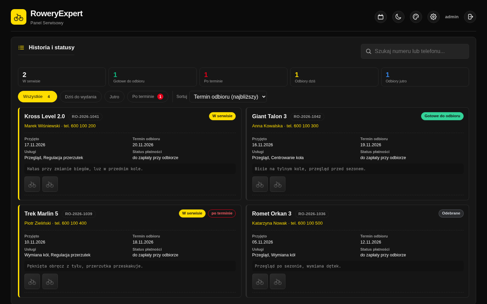
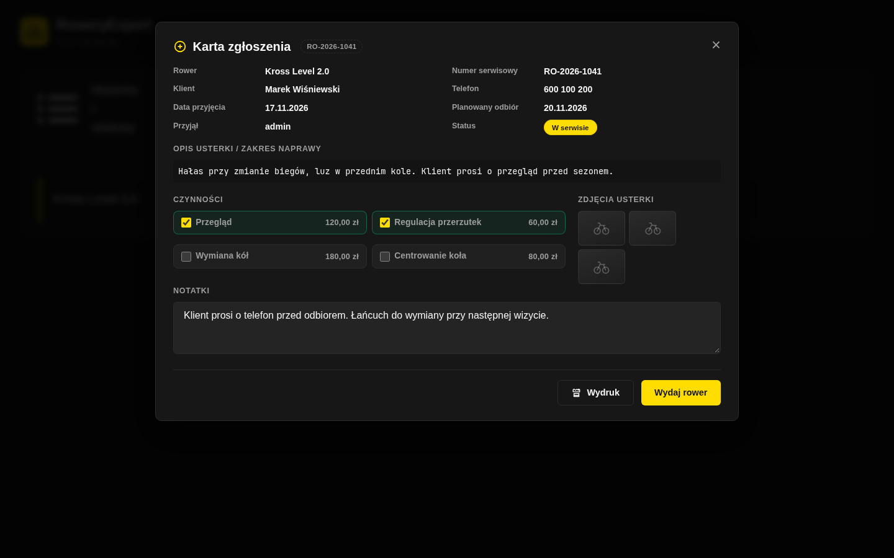
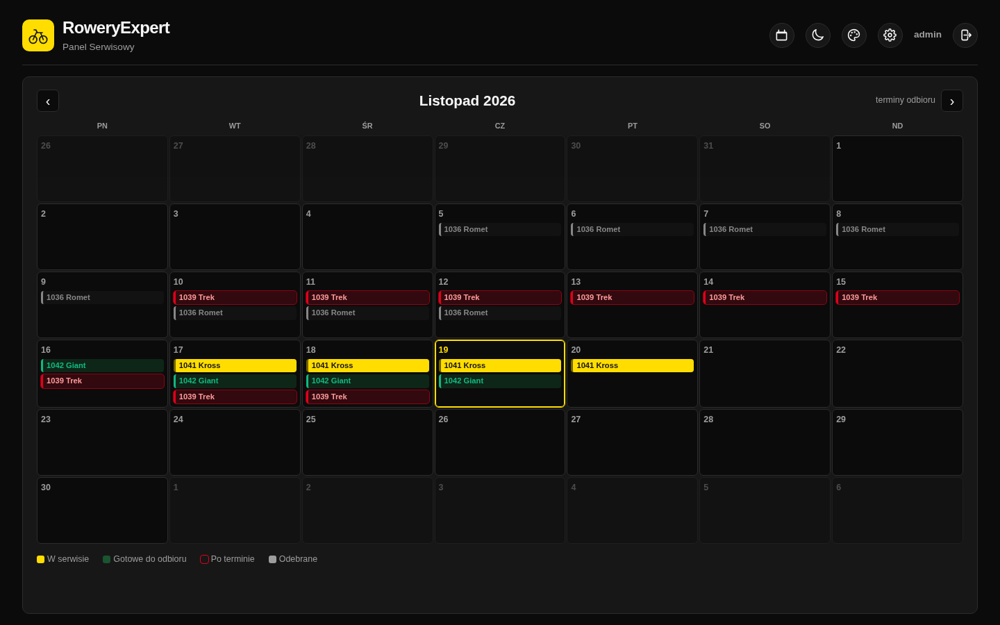
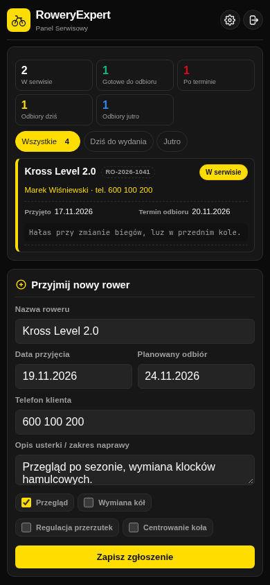

Przyjęcie i wydanie
Dane klienta, sprzęt, zakres prac i termin — jedno okno, dwa kliknięcia.
PROJEKT · ROWERYEXPERT
Przyjęcie roweru, zdjęcia usterki, terminy, etykieta QR i karta wydania — w jednym panelu w przeglądarce. PHP 8 + MySQL, bez frameworka i bez builda: wrzucasz pliki na hosting i działa. Open source, licencja MIT.
Wszystko, co w serwisie i tak robisz na papierze — tylko zapisane, policzone i wydrukowane.
Dane klienta, sprzęt, zakres prac i termin — jedno okno, dwa kliknięcia.
Wgrywanie z telefonu, miniatury 320 px i oryginały skrócone do 2000 px: lista nie ściąga 80 MB.
Miesiąc z chipami na cały pobyt roweru, „po terminie” i „jutro” widoczne od razu.
Etykieta RO-ROK-ID do wydruku i skaner QR z aparatu telefonu.
Potwierdzenie przyjęcia i karta wydania z listą wykonanych czynności i miejscem na podpis.
Twoje czynności i ceny; w karcie zgłoszenia zaznaczasz je jako wykonane.
Administrator i pracownicy; pracownik widzi tylko to, czego potrzebuje.
Dziesięć funkcji włączasz i wyłączasz z panelu — wyłączona znika z UI i z API.
Zgłoszenie przyjęte na telefonie pojawia się na komputerze w ~10 s, bez odświeżania.
Sprawdzenie wersji i aktualizacja z kopią zapasową — bez FTP.
Zapomniane hasło odzyskujesz sam, linkiem potwierdzającym z maila.
Jeden hosting FTP wystarczy: PHP 8, MySQL, katalog zapisywalny. Zero composera na produkcji.
Zrzuty z instalacji testowej — dane przykładowe.




Klasyczny hosting FTP wystarczy — SSH nie jest potrzebny.
Żeby nie było niespodzianek.
To kod, który stoi na Twoim hostingu. Baza i zdjęcia są u Ciebie, nikt ich nie widzi.
Klient dowiaduje się o odbiorze telefonicznie, tak jak dotąd.
Wystawia potwierdzenie przyjęcia i kartę wydania; faktury zostają tam, gdzie były.
Kod jest otwarty — możesz wdrożyć sam. Jeśli wolisz, żeby ktoś postawił i skonfigurował panel pod Twój serwis, napisz:
kontakt@zbind.pl